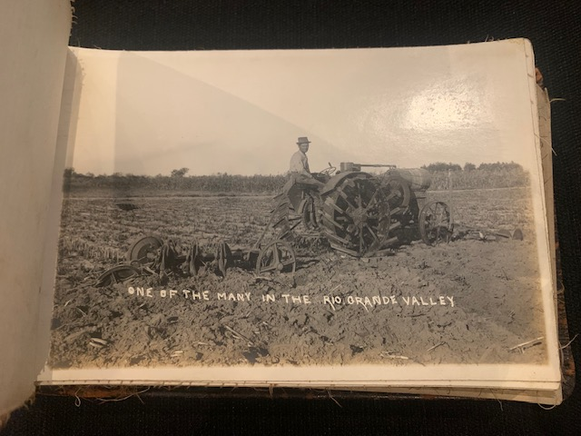

Early Tractor in the Rio Grande Valley
This fantastic photograph captures a true revolution in agriculture: the arrival of the internal combustion tractor. This machine, with its cleated metal wheels and powerful engine, was the high technology of its era, capable of doing the work of many teams of mules in a fraction of the time. The caption, "One of the many in the Rio Grande Valley," is particularly revealing. It tells us that the region's farmers were rapidly modernizing, adopting the latest innovations to maximize the productivity of the newly irrigated land. This image is a powerful symbol of the shift from animal power to machine power.
← Back to Full GalleryThe Living Photograph
Watch this historical photograph come to life with motion and color, showing the dawn of mechanized farming.
Photo Details
- Subject: Agricultural Mechanization
- Technology: Internal Combustion Tractor
- Notable Feature: Cleated metal wheels for traction
- Era: Early 20th Century